💴 CFD戦略ブリーフ — 8/24週
対象週: 2026-8-21_wk03（データ期間 2026-08-17→08-21 / snapshot 2026-08-23） ｜ ソース: review・meta・snapshot・boss(wr-2026-8-21 本体8/21 ＋ Rex追記§A-K 8/22)・週末終値チャート10枚・口座3枚＋リバランス明細・--trade --news・X実データ（3週連続成功） ｜ CFD: 残 1.0 Lot（加重平均 4,404.50）で JH を跨ぐ構え
⚠️ wk02（2026-8-14）はスキップ。前週比はすべて wk01（2026-8-7）比＝2週間ぶん。
Regime: Gold Bid（維持だが中身が入替: equities flat→up / crypto range→strong）
Add risk gate: 開放（VIX 15.13<18）
Reduce: caution
介入 coord_stage: executed / IMF残弾 0（据置）
★ 今週の骨格 — ベセントの長期金利抑制策が1日で剥落した。
8/20 に財務長官が「長期国債の買い入れを倍のペースに」と発言し、木曜午前は長期金利低下→ドル安・円高・株高に振れたが、効果が1日で剥落した。
Boss の整理は「低金利→借入増→インフレ再燃→FRBが結局利上げ圧力→長期金利が戻る」という連立方程式の破綻で、★ドル円・US10Y・ゴールドの矛盾したシグナルの根っこ。
★ X側は調達側の構造を足している——@vkrollup「長期買い入れを少なくとも倍増（1オペ$4B以上）、オフザラン10-30年、財源は短期債（bills）＝疑似ツイスト」／@steve_hanke「この手法は愚か者のゲーム、結局は短期債の増発で賄っている」。同じ現象を負債側から見た形で、Boss の連立方程式と方向は一致する。
★ Rex追記§D は「FIMAレポで調達＝長期金利を上げられない」という8月上旬に推定していた制約が、8/20 に当事者の口から明言された＝推定が確認に変わったと位置づける。政策は自己打ち消し的で、長期金利を下げる手段が、その手段自体によってインフレ期待を押し上げ金利を戻す。→「発表効果は数営業日で剥落する」という一般則になりうる（事前登録案 P9・Boss承認待ち）。
★ もう一つの軸 — AI半導体が「成長」から「還元」フェーズへ。
8/20 のウォルマート決算ショック（米消費減速懸念）で NYダウ -1.32% / ナス -1.0% / S&P -0.87% と急落した中、
★SOX指数は -0.53% に留まった。理由はサムスンが SKハイニクスに続き FCF の50%（100兆ウォン）を株主還元に回すと発表したこと。
村田製作所の資料では2030年頃からさらに需要拡大の読みもあり、押し目は拾う地合いという整理。
★ 口座側でも GX半導体（2243）が +311,460円で単独最大の牽引役として同じ方向に効いている。
⚠️ 8/21 米PMI速報（22:45）— ジャクソンホール前の最終材料。
製造業 53.2（予想53.9・-0.7下振れ）／非製造業 56.8（予想54.0・★+2.8 大幅上振れ）／コンポジット 56.0（+2.1）。
反応は US2Y 1H足 4.185→4.215（+3bp）／DXY 98.60台→98.79／US100 高値29,453.6→終値29,244.6。
★ 8月のディスインフレ・シナリオを作った材料（NFP -23,000／小売 -0.6%／ミシガン 51.0）と正面から食い違う。方向としてはスーパーコア加速（7月：医療サービス+0.6%、航空運賃+2.2%）と揃う。
⚠️ ただしソフトデータ同士でも割れている（ミシガン51.0もソフト）。S&P Globalフラッシュは ISM・ハードデータとの乖離が常態。1本で機構は閉じない——「薄く織り込まれているタカ派側に材料が1つ乗った」とだけ記録する。
1. 11ペア スナップショット（wk01 → wk03 の2週間比較）
| 銘柄 | 最新 | 30日% | wk01→wk03 |
|---|
| XAU/USD | 4,624.100 | +13.68% | +283.4 (+6.53%) |
| BTC/USD | 78,335.188 | +22.21% | +13,455 (+20.74%) ⚠️週末値 |
| WTI | 87.060 / Boss 87.528 | -2.52% | +8.88 (+11.36%) |
| US100 | 29,308.859 / Boss 29,293 | +4.20% | -413.4 |
| JP225 | 66,016.359 | +2.17% | +409.6 |
| USD/JPY | 158.940 / Boss 158.972 | -2.99% | +1.195 |
| US10Y | 4.738 / Boss 4.736 | +1.26% | +0.078 4.745に接近 |
| US30Y | 5.276 / Boss 5.256 | +2.21% | +0.065 |
| US5Y | 4.424 | -0.05% | +0.062 |
| US3M | 3.710 | -2.50% | ±0.000 |
| US2Y (Boss実測のみ) | 4.215 | 8/14 4.104→+11.1bp | ★機械は2年未取得 |
| VIX | 15.130 | -18.57% | +0.230 18割れ継続 |
Boss実測（機械snapshot外）: DXY 98.799（-0.04%）・日足Fibo50（98.6）に支えられレンジ ／ EURUSD 1.1676（1.1575〜1.1646 を上抜け） ／ XAU現物週足終値 4,604.80（+1.90%）・日足 O4,520.67 H4,632.13 L4,508.79
⚠️ XAU は GC=F 先物で Boss の現物とは既知の乖離。BTC は暗号資産が24/7で動くため週末値（金曜引けではない）。WTI の30日 -2.52% は30日前が高値圏だったためで、水準は wk01比 +11.36% の急騰＝30日%と水準変化の符号が逆。
11ペア30日 正規化プロット
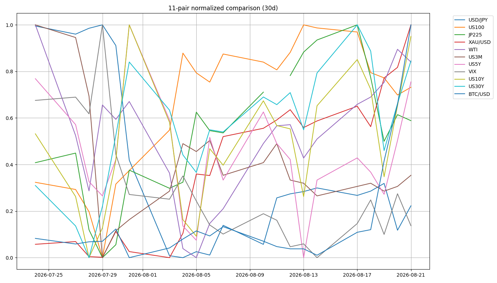
2. ★ 年輪 8-2・8-3 がともに機構として棄却された（今週の中心）
FRED実測（DGS5 / DFII5 / T5YIE）。★恒等式 DGS5 − DFII5 − T5YIE は全期間34営業日で max|err| = 0.0——系列の取り違えがないことの最強の裏づけ。
| 日 | 名目 | BE | 実質 | 金 |
|---|
| 8/04 | -7.0bp | -4.0bp | -3.0bp | 動かず |
| 8/05 | 0.0bp | -1.0bp | +1.0bp | ★週最大の上げ |
| 8/06 | +7.0bp | +5.0bp | +2.0bp | 4,302.18で反落 |
8-2「ドル安 かつ BEが崩れないこと」機構として棄却
8-3「原油下落の二段階」両段とも棄却・符号が逆
8-2 が棄却された理由: 8/4 はDXY が 99.527 を割った＝第一条件を満たしていたのに金が動かなかった日で、当時は「BEが崩れているから実質金利が下がらない」と説明していた。しかし実質金利は実際に -3.0bp 下がっていた（BE は名目低下の 57% を吸収したが、打ち消してはいない）。
8-3 が棄却された理由: 第1段（BEだけ下がる→実質↑）は累積 -5.0bp、第2段（名目がBEより下がる→実質↓）は+1.0bpで、両方とも符号が逆。
★ 実質金利が上がった日（8/5）に金が週最大の上げをしている。本体ゴールドセクションの問い（「金利抑制策が1日で無効化されたなら金は下がっているはず、なのに下がっていない」）と同じ形が2週間前にも起きていた＝2件目。
⚠️ ただし届いていないところ: 週内 |ΔDFII5| は最大5bp・累積-6bp。金がパーセント単位で動く横で、実質金利は bp 単位でしか動いていない。→「実質金利は金を動かさない」にはまだ届かない。届いたのは「8-2も8-3も、実質金利チャネルが発生させていない動きを実質金利で説明しようとしていた」まで。
3. レジーム & ゲート状況
機械レジーム
Gold Bid
equities=up（flat→up） / vol=normal / oil=range / gold=bid / crypto=strong（range→strong） / yields=rising
★ラベルは維持だが中身が入れ替わった
Add risk ゲート
開放
VIX 14.90 → 15.13 < 18。ただし Boss は「無理に順張りしない」「来週中に利確意識、深追いのロングは避ける」。9月上旬〜9/18 日銀利上げにかけて調整リスク
ポジション
1.0 Lot
XAUUSD long・加重平均 4,404.50（0.5@4,348 ＋ 0.5@4,461）。★JH を 1.0 Lot で跨ぐ構えは年輪「イベント前に軽くする」と一致していない（要Boss判断）
4. シナリオ（★主要リスクごとに反対方向の分岐を明示）
メインPCE/JH待ちのレンジ。無理に順張りしない・来週中に利確意識
A JHハト派織り込み済み→金は 4,651 へ、その上は空白地帯。株は戻り基調再開へ
B JHタカ派維持織り込みが薄い→★金は強く叩かれる
C PCE上振れ8/21 PMI 56.8 と方向が揃い材料だけ2本乗る＝最も重い配置
D 円高転換の前倒し9月上旬想定が早まれば日本株に逆風／逆に 9/18 BOJ の急落は「買い場として温存」
★ 8/26 → 8/27 の並びが来週の設計を決める。PCEはFedが最も重視するインフレ指標で、それが「ウォーシュが話す前日」に出る。順序が逆なら「講演を受けて指標を見る」だが、実際は指標を見てから講演を聞く——★JHのタカ/ハトの読みは PCE の結果に条件づけられる。
★ 非対称の扱い方: 確率は「ハト派」が高い。しかし損失の非対称が大きいので構えは「タカ派維持」に合わせる。PCE上振れが重なると、8/6（ウォーシュが利上げ示唆）と同じ材料構成が、より重い抵抗帯 4,651.26 の直前で再現される。
X側 @just_stevin は「ファンドマネージャー調査で約69%が中立/データ依存を予想」（※出所・母数は未検証）で、この非対称と方向が一致。@moving_markets は今週を「強気シナリオ全体が裁判にかけられる週」と表現。
5. CFD 銘柄別アクションプラン
Gold (XAU) 残 1.0 Lot / 4,651.26 まで 19.13pt
現物週足終値
4,604.80（+1.90%）、日足 O4,520.67 / H
4,632.13 / L4,508.79。
日足は下降チャネルを上抜け、4H は急騰継続中で
4,645 付近に強い売り圧力の壁。
★4,650 と 4,651.26 はほぼ同一の線で、同じ線に対する上下の分岐（Rex追記§K）——到達して跳ね返される＝8/6と完全に同じ配置（最も重い抵抗帯に最大のイベントの直前）＝軽くする ／ 終値で明確に上抜ける＝4,850圏（表示 4,866.67）への新展開。矛盾ではない。
撤退設計（三層）: 一次 4H 4,452 実体割れ（レグ +161.0）→ 二次 日足 4,400 実体下抜け＋4H TL転換の AND（+109.0）→ 滑り限界 4,322（E2レグ0）/ 4,291（レグ全体0）。
★一次は ratchet する（新しい4H押し安値ができれば線が切り上がる）のに対し、4,400 は週足Fibo23.6 の固定水準。「4,452固定」で運用するか「その時点の直近4H押し安値」で運用するかは要Boss確認（§I-8）。
★Boss本体の4Hデイトレ記述と現ポジは別物（§K）: 本体の「4,630〜4,650でヒゲ・失速サインが出たら 4,528〜4,485 への短期反落を想定した一部利確／短期ショート併用」は4Hデイトレ目線であり、スウィング 1.0 Lot の設計ではない。矛盾ではなく時間軸が違う——本スレで同じ誤読が2回起きている。
★動画の指摘: 「ベセントの長期金利抑制策が本当に1日で無効化されたなら金は下がっているはず」なのに下がっていない＝長期金利はいずれ下がる（＝ドル安・円高）を織り込んでいるか、中国等の隠れた買いが入っているかのどちらか。
★X側 @GOLDNWUN は「4,600台は3ヶ月ぶり高値だが史上最高値は約$5,600圏」と付記——wk01 で記録した「1/29の最高値5,585-5,589から依然下」と整合。
US10Y / US2Y 4.745% が今週最大の単一ライン
US10Y
4.736%（機械 4.738）。日足は昨年11月の底 3.9% から上昇トレンド継続、
6月高値からの下降TLを上抜けて直近レンジ上限
4.745% に接近。
ベセントの買い入れ倍増策が「1日で効果消滅」した結果としての高値更新で、★
株・為替・ゴールドの矛盾のほぼ全ての震源。
4.745% を明確に上抜ければ株安・ドル高（円安）継続を後押し／反落すれば「来週〜9月の円高転換」シナリオの裏付け。月曜はまずこのレベルの反応待ち。
★★US2Y が戻っている: 8/14終値 4.104 → 8/21終値 4.215（+11.1bp）。handoff は「8/13・8/14の日足実体で 4.154 を下抜け → ピークアウト確定」としていたが、現在は閾値の 6.1bp 上に戻っている。
★ピークアウト宣言には無効化条件が書かれていない——混雑度表の読み1には反転合図があるのに、ピークアウト側にはない＝片側だけ落とせない設計。→ 無効化条件の後付け（例「割った上昇チャネル下限＝日足4.230圏を日足実体で回復したら撤回」）を提案・要Boss判断。
チャネル上限 4.240〜4.275 での反落 vs 明確なブレイクを US10Y とセットで見る。⚠️Boss本体の「高値4.244」と TVC日足（高値4.217/終値4.215）が不一致（§I-2 未解決）。
US100 / SP500 高値圏から調整・無理に順張りしない
日足は
29,958〜30,922 の高値圏から調整、
29,293 で引け。4H は
29,691（下降中の移動平均線）が上値の壁、
29,130〜28,869 が直近サポート。動画側も「方向感が読めない」で
ノートレード宣言、週足は4月からの急騰を消化する
レンジ相場。
上=29,691 → 29,958 → 30,922（29,691〜29,958 を回復して初めて戻り基調再開） ／ 下=29,130〜28,869 が押し目候補（損切りは 28,869 割れ）。
★9月上旬〜日銀利上げ(9/18想定)にかけて調整リスクが語られているので、来週中に利確意識、深追いのロングは避ける。
JP225 二段構え・BOJ急落は買い場として温存
日足は7月高値
73,520 からの下降三角持ち合い、直近
66,779 付近でレンジ。4H は
61,715 からの上昇TLに接近しつつ 65,969〜66,779 でグダグダ。機械 66,016.359。
①63,640〜64,000 まで下げれば押し目買い（動画の押し目ゾーンは 63,640〜64,768） ／ ②65,963 を上抜き定着なら 66,800 目標の順張り。半導体還元銘柄の強さが下支え材料。
★9/18前後のBOJ利上げ思惑での急落は「買い場」として温存、深追いは禁物。
USD/JPY ラウンドトリップ・ブレイクは追わない
日足は
160.489 の高値から 158.972 まで反落、4H は8月の急落後
158.7〜159.17 でベース形成中。★
ベセント発言→円高→撤回→円安戻り、というラウンドトリップでチャートは「
右肩下がりのカップウィズハンドル崩れ」。
158.00〜158.70 での短期ロング（目標 159.00〜159.20、損切り 157.55 / 157.15 割れ）に限定。160円超えのブレイクは今週は追わない。月末〜来週前半でロング整理。
★159.18〜159.20 超えは今日時点では「騙し」の可能性ありで深追い禁止——来週にならないと本格上昇の確認は取れない。9月上旬から円高相場に転換する前提は生きている。
X側 @USDJPY_rate「レンジ約158.4〜159.6、159.0〜159.5を繰り返しテスト、高値159.59付近」／@forextimes2fth「159.5〜160が攻防ライン、サポート約158.6/158.4」で Boss とほぼ同水準。介入は zone=calm / imf_ammo=0 / coord_stage=executed で据置。
WTI イラン制裁に実弾が伴う
日足は
下降ウェッジを上抜けて 87.528、直近高値
88.377（機械 87.060）。★
イラン制裁が「今世紀最大の経済爆弾」との表現通り本気度が高く、UAEが対イラン取引を断つなど実弾が伴っている点がポイント。目先は小さいダブルトップ形成中で
84〜85.67 への押し目が先に来る可能性。
84.90〜85.70 への押しがあればロード候補（目標 87.70→90） ／ 88.40 超えの上抜けブレイクも順張り可 ／ ★82.75 割れは制裁プレミアム剥落のサインとして撤退。
★X側 @agtprpnabsrdty は「トランプ/ベセントの『最大圧力』『経済版Dデイ』という枠組み、詳細は 8/24(月) 頃に出る見込み」——来週頭に材料が出る可能性（※X上の記述・公式発表ではない）。@snipy_in は「Brent 約$93台 / WTI $80台後半」。
EUR/USD ・ DXY ・ BTC DXY 98.6 が全体の支持
EURUSD 1.1676 — 日足は
1.1575〜1.1646 のレンジを上抜けて引け、上値めど 1.1884 はまだ距離あり。4H は上昇継続だが、動画は
2月5日以降積み上がった売り圧力が重く「方向感を掴みにくい」。
1.1600〜1.1646 の押し目からの短期ロングで 1.1700〜1.1750、サイズは抑えめ。日足終値が 1.1575 を割れたらブレイク失敗＝ニュートラル。
DXY 98.799（-0.04%） — 日足TLを割り込んで下落後、★日足Fibo50（98.6）に支えられてレンジ形成。上値抵抗 100.335 ／ 直近戻り高値圏 99.430 ／ ★現在の支持 98.687 / 98.6 ／ 下値 97.960 / 97.536。★8/19 に 98.772 を割って 98.767 で引けたあと 98.6 で止まっている——「DXYが節目を次々割る」流れがここで一旦止まったという読みが要る。
BTC 78,335.188（30日 +22.21%・⚠️週末値）— トランプ政権のBTC大量購入検討発言で急伸再開、6月1日の大口売り水準まで到達。政府購入検討という思惑買いに飛び乗らず、押し目待ち徹底。ポジションは軽めにして、来週後半〜再来週にかけては利確/ヘッジ優先。
★X側は懐疑が優勢——@AltcoinPro_「米戦略ビットコイン準備は約328k BTC で、その大半は押収・没収由来であり市場での買い付けではない」／@taepark_gp「議会承認なしに大規模な税金による市場買い付けが近く起きることへの懐疑」（一方 @bullTat2 は未織り込みの強気材料と見る）。Boss の結論と方向は一致するが、懐疑の根拠がより具体的。
6. 金利カーブ 4点 & インフレ補償
3m10s（主ゲージ）+102.8bp / positive（Δ30d +15.4bp）
5s10s+31.4bp / bull_steepening（Δ30d +6.1bp）
belly_premium+18.9 → +21.3bp（瘤が再び膨らんだ）
10s30s+53.8bp（Δ1w -3.1 / Δ30d +5.5 ＝符号が逆）
structure / recessionbelly_elevated / positive
★belly_premium が wk01 の「瘤が萎んだ」（+26.0→+18.9bp）から巻き戻して +21.3bp へ。3m10s は positive 継続で逆イールドは遠い。
★10s30s は Δ1w と Δ30d で符号が逆——引用時は必ず窓を明示。判定には使わない（水準・Δ・符号のみの方向ラベル／閾値未設定／8〜12週ためてから検討）。正本は機械の close-to-close 系列で、Boss の手読み（暫定 52.0bp・ベンダー未統一を自己申告）と1本の時系列に混ぜない。
Boss暫定のカーブ（8/13比）: 2s10s 50.0→52.1bp（+2.1）／ 10s30s 57.1→52.0bp（-5.1）／ 2s30s 107.1→104.1bp（-3.0）。★ベリーはスティープ化、超長期はフラット化＝8/13時点の「全面ブルスティープ」から形が割れている。
★ inflation_compensation が snapshot 初出（as_of 2026-08-21）: 5Y BE 2.34%（Δ1w +10.0bp） ／ 5y5y BE 2.34%（Δ1w +4.0bp）。★近期が長期アンカーより大きく動き、両者が同水準に並んだ。判定には使わない（サンプル不足・閾値未設定・原油との相関も自動計算しない）。⚠️ as_of が他ブロックと揃っているのは偶然で、FRED は公表ラグがあり揃わない週が正常。
7. 週内タイムライン
- 8/24(月) US10Y 4.745% の反応待ち（Boss：月曜はまずこのレベル）。★X側はイラン「最大圧力」の詳細が 8/24 頃に出る見込みと言及（※公式発表ではない）→ WTI の材料が週頭に出る可能性。
- 8/26(水) ★★米PCE ／ 米GDP — JH開幕の前日。PCEはFedが最も重視するインフレ指標で、指標を見てから講演を聞く順序。上振れなら 8/21 サービスPMI 56.8 と方向が揃い、タカ派側の織り込みが薄いまま材料だけ2本乗る＝最も重い配置。⚠️GDPの改定回次・PCEのコア/総合の予想値は未取得。
- 8/27〜29 ★★ジャクソンホール。8/28(金) 10:00 ET にウォーシュ議長の初基調講演（@AlphaWireNewsAi）。ウォーシュは8/6に利上げの可能性を示唆、7/29 FOMC は 9対3で3人が利上げを主張。ハト派＝織り込み済み／タカ派維持＝薄い。
- 9月上旬 円高転換シナリオの想定時期（Boss本体ドル円セクション）。
- 9/18(想定) 日銀利上げ — 日経・ドル円。★日本株の急落は「買い場として温存」。
- 秋〜11月 SPCX 7%トランシェのロックアップ解除（12/8満了・保有13株） ／ 11月 米中間選挙（事前登録案 P10 の対象期間）。
- ⚠️未取得 8/24週の経済指標カレンダーは PCE/GDP の2件しか取得できていない（Rex追記 §I-6）。
8. 監視トリガー（毎朝チェック）
★ US10Y 4.745% 上抜け→ 株安・ドル高（円安）継続。今週最大の単一ライン
★ US2Y 4.240〜4.275 ブレイク→ FRBタカ派再評価＝ドル買い/円安継続。反落ならレンジ継続
★ 8/26 PCE 上振れ→ PMI 56.8 と方向が揃い最も重い配置
★ 8/27-29 JH タカ派維持→ 織り込みが薄い＝金は強く叩かれる
★ Gold 4,452（一次）→ 4,400（二次）→ 一次は4H実体割れ・二次は日足実体＋4H TL転換の AND
★ Gold 4,650 / 4,651.26→ 到達＝8/6と同配置で軽くする／終値上抜け＝4,850圏へ
DXY 98.6（日足Fibo50）割れ→ 節目を次々割る流れの再開
US100 28,869 割れ / 29,691 回復→ 損切り / 戻り基調再開
JP225 63,640〜64,000 / 65,963 上抜き定着→ 押し目買い / 66,800 目標
USDJPY 157.55・157.15 割れ / 159.18-159.20 超え→ 損切り / 騙し警戒で深追い禁止
WTI 82.75 割れ / 88.40 超え→ 制裁プレミアム剥落で撤退 / 順張り可
EURUSD 1.1575 割れ→ ブレイク失敗＝ニュートラルへ
9. Boss提供チャート（週末終値 / 2026-08-21 close・10枚）
XAU/USD — 4,604.80(+1.90%)・高値4,632.13。下降チャネルを上抜け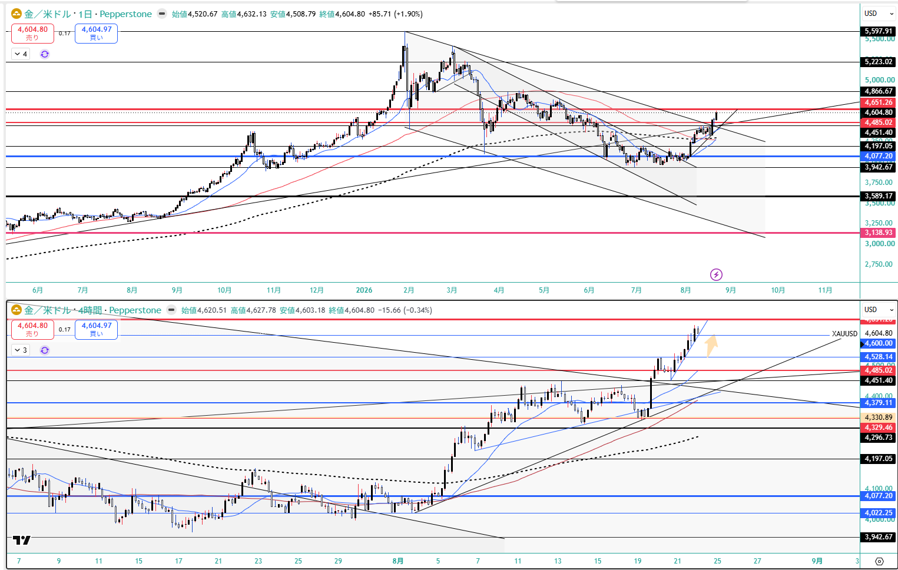
US10Y — 4.736%。★直近レンジ上限 4.745% に接近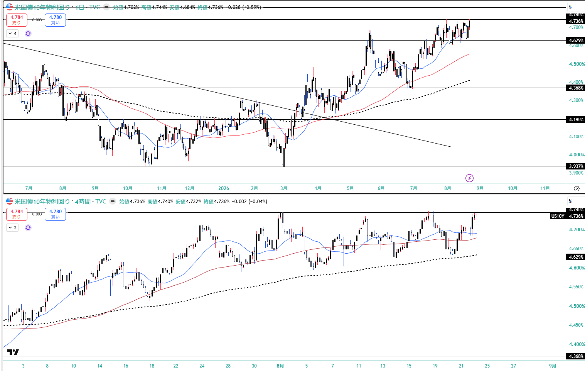
US2Y — 4.215（TVC）。8/14 の 4.104 から +11.1bp 戻した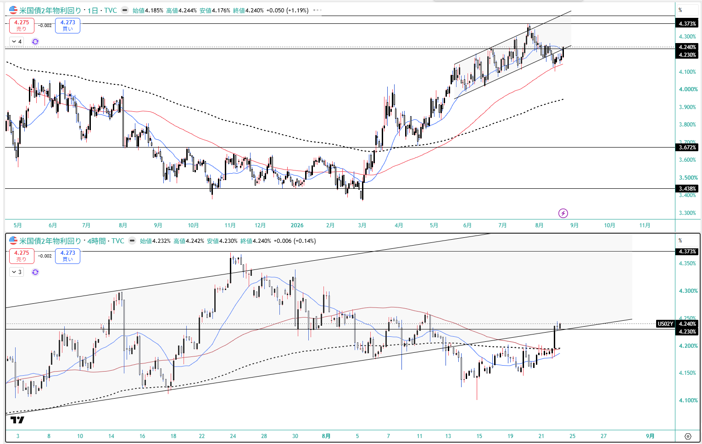
US30Y — 5.256（TVC）／機械 5.276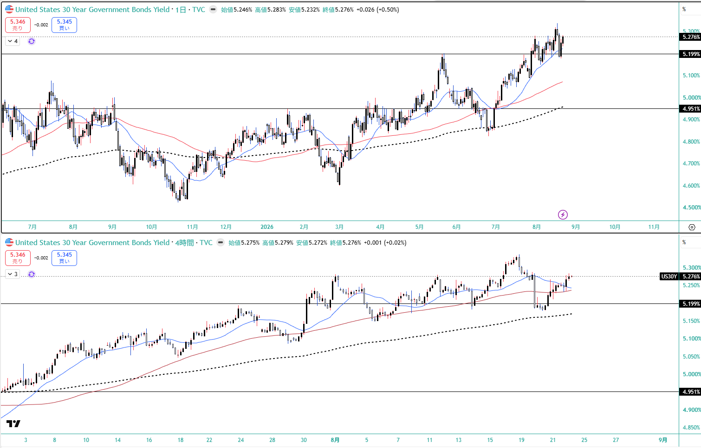
US100 — 29,293。29,958〜30,922 の高値圏から調整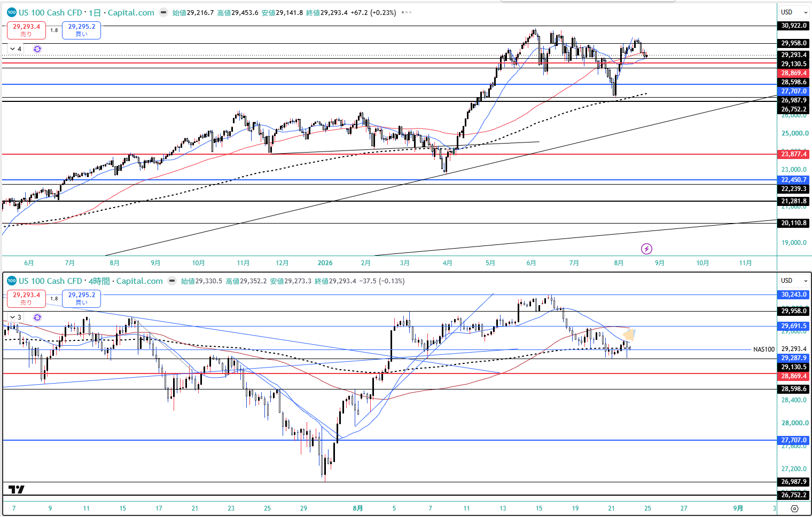
JP225 — 66,779付近でレンジ。7月高値73,520からの下降三角持ち合い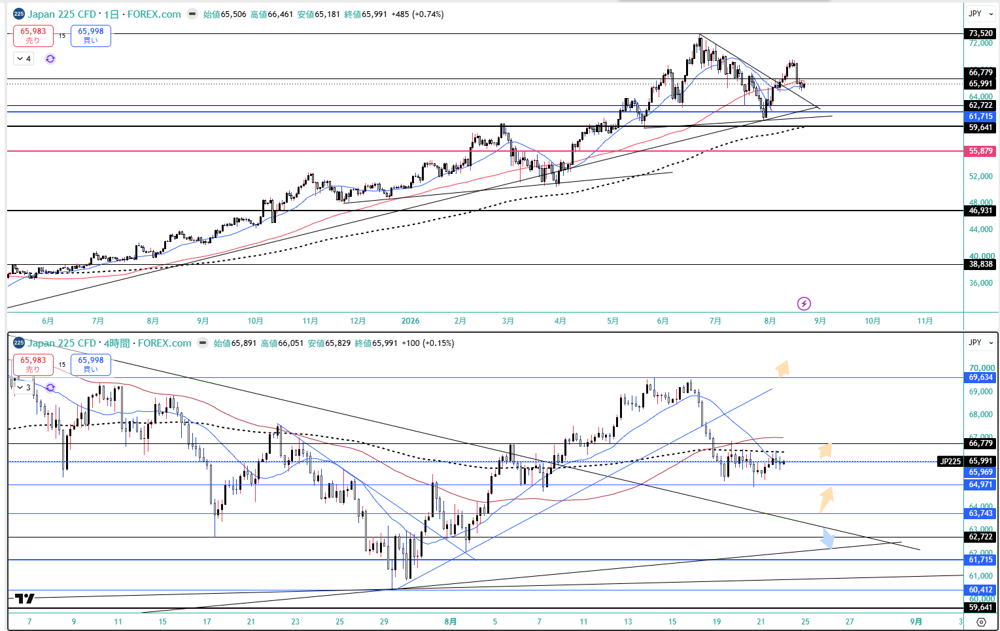
USD/JPY — 158.972。「右肩下がりのカップウィズハンドル崩れ」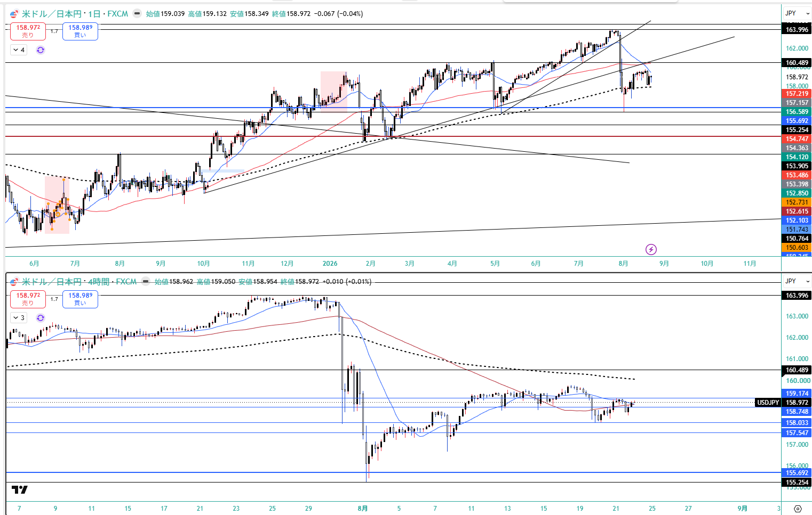
EUR/USD — 1.1676。1.1575〜1.1646 のレンジを上抜け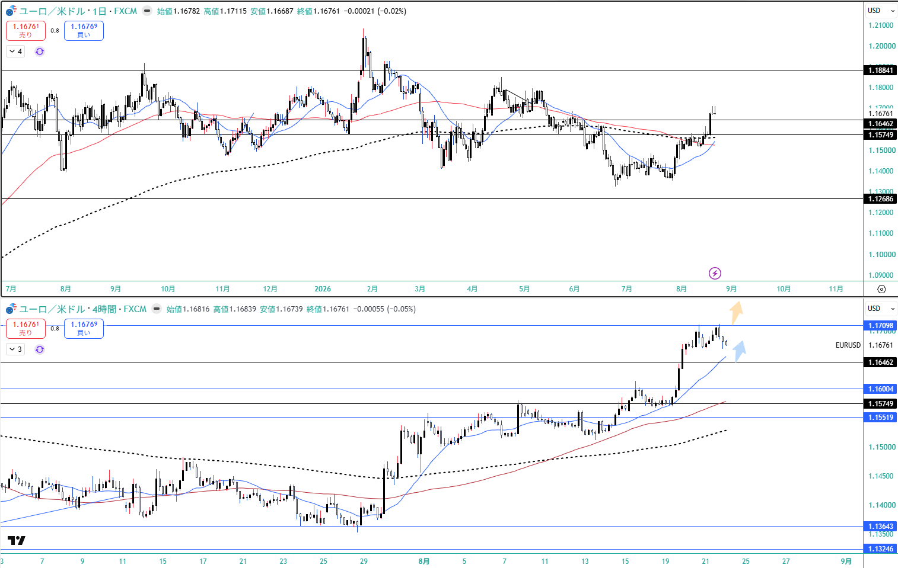
DXY — 98.799。★日足Fibo50（98.6）に支えられレンジ形成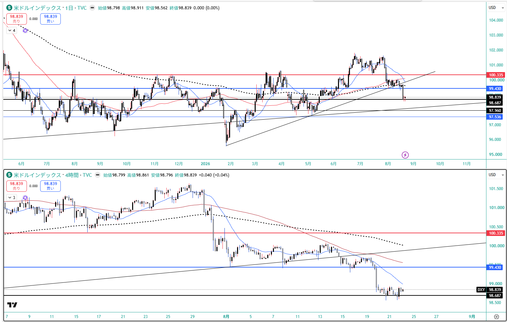
WTI — 87.528・高値88.377。下降ウェッジを上抜け（イラン制裁）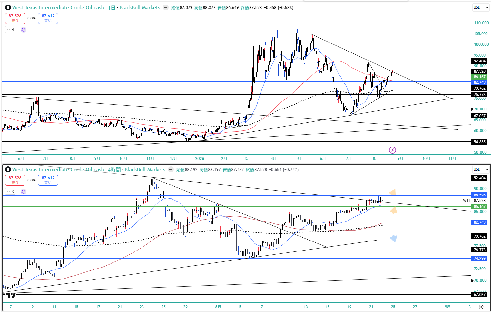
10. GMポートフォリオ（2026-08-23 09:18）
総資産
5,020,238円
wk01 4,993,914円 → +26,324円（ほぼ横ばい）
評価損益
+416,720円 / +9.05%
wk01 +417,056円 / +9.11% → -0.06pt
買付余力
265,596円
預り金 132,315円 ＋ スィープ 133,281円。★リバランスによる現金化
★ 総資産はほぼ横ばいだが、中身は入れ替わっている。
国内株の評価額が -243,012円（4,469,189→4,226,177円）減る一方で、預り金＋スィープが 265,596円。
→ ★Boss のリバランス（買付余力の引き上げ）による現金化であって、評価損の発生ではない。
リバランス明細（⚠️11件中8件のみ表示・上3件は画像外）: 8/10 に 200A を20口買い（@4,303）、8/21 に 200A を売60口（@4,390/@4,393）・買28口（@4,397/@4,383/@4,419/@4,384）＝ネット -32口、425A を20口買い（@384.9）。この明細は国内現物のみで、米国株側の変化は説明されていない。
国内株式(現物)4,226,177円 / +400,246円 / +10.46%（特定 1,683,623円 / NISA 2,542,554円）
米国株式528,465円 / +16,474円 / +3.22%（外貨建 3,323.06 USD / +144.07 USD / +4.53%）
★★ 米国株が -21,528円/-3.95% → +16,474円/+3.22% へ黒字転換。牽引は GDX 15株 +276.15 USD（+43,380円）＝金急騰の直撃、SPCX 13株 -132.08 USD（-26,906円）。
国内は GX半導体(2243) +311,460円が単独最大の牽引役、GXロボ&AI +50,952 / GX成長インフラ +28,480 / iS S&P500 +27,567 / GXゴールド特定 +18,150。重しは GX防衛テック -18,500 / ファナック -17,000 / GXゴールドNISA -13,600。
★ GXゴールドは特定(+18,150)とNISA(-13,600)で符号が分かれる——取得単価が 363 vs 394 で異なるため。
⚠️ ★ wk01 にあった IONQ が無くなっており、SPCX も 10→13株。wk02 が欠番でいつ変化したか特定できず、リバランス明細は国内現物のみで米国株を含まない → 要Boss確認。
⚠️ ★ 金エクスポージャーは3層で重複している。リスクは分散されていない。
CFD 1.0 Lot（purpose: capital・撤退条件あり）＋ GDX 15株（purpose: unset）＋ GXゴールド 425A（特定750口＋NISA2,000口・purpose: hedge / judgment_frame: permanent・ドローダウンを通す前提で原則撤退条件なし）。
★ 合算して見る必要はあるが、処し方は別。片方だけ見て判断する経路を作らない。
JH でタカ派維持なら「金は強く叩かれる」——そのとき CFD と現物の両方に同時に逆風が来る配置。
JH を 1.0 Lot で跨ぐかの判断は、この重複エクスポージャー込みで見る必要がある。
🔬
ETFルックスルー（保有ETFの中身を実際に取ったのは今回が初めて。3件とも名前からの推定と実体がずれていた）
2847「新成長インフラ」 → 物流18.59% ＋ 通信/IT23.17%、
電力は5.99%のみ（半導体色30.49%） ／
2243「半導体」 → ★
米国半導体。NVDA11.80/MU10.04/AVGO8.87…
上位10で69.21%、日本株ゼロ ／
200A「日経半導体株」 → ★
キオクシア28.80%の実質3銘柄バスケット（上位3で54.79%）
★
これが変えた診断:
国内半導体は 200A の 8.7% のみで
米国半導体 2243 が 22.6% で主／
実質エクスポージャーは 米国 37.7% / 日本 62.3%（証券会社表示は上場地基準で米国12.5%）／
国内で重いのはロボ・FA（ファナック17.5%＋2638 14.9%＝32.4%）／
2847 の電力は 0.42% で空き軸は本当に空いている
★
通貨エクスポージャー: USD建て資産 1,542,792円＝総資産の 30.7%。⚠️
Boss週末レポートの「9月上旬から円高転換」観と逆を向いている。2243・1655 の為替ヘッジ有無は未確認。
⚠️
2243 の組入は 2026-06-30 時点で約2か月古い。200A・2847 も上位10/20のみ。→
etf_lookthrough_2026-08-23.md
⚠️ 本資料は 2026-8-21_wk03 の確定データ（snapshot 2026-08-23 / review / meta / Boss市況 wr-2026-8-21＝本体8/21 ＋ Rex追記§A-K 8/22 / 週末終値チャート10枚 / 口座3枚＋リバランス明細 / --trade --news / X実データ）に基づく整理であり、創作・ソース外情報は含まない。
⚠️ wk02（2026-8-14）はスキップ。前週比はすべて wk01（2026-8-7）比＝2週間ぶん。
★★ 年輪 8-2・8-3 がともに機構として棄却（FRED実測・恒等式 全34営業日で max|err|=0.0）。⚠️ただし週内 |ΔDFII5| は最大5bp・累積-6bpで、金がパーセント単位で動く横で実質金利は bp 単位でしか動いていない——「実質金利は金を動かさない」にはまだ届かない。
★ 設計上の申し送り: ①測定分解能より細かい閾値を引いた（DFII5・T5YIE とも1bp刻みで、8-2 の判定線 -3.0bp は量子化幅の3倍しかなく実測が境界にちょうど乗った）②T5YIE は独立した測定値ではない（DGS5 − DFII5 から算出）＝名目・BE・実質は3自由度ではなく2自由度で、BEを別指標として扱ってきた前提の訂正が要る ③記述を横断させる前にポジションのクラス（デイトレ/スウィング）を確認する——本スレで同じ誤読が2回起き、いずれも「矛盾を発見した」形で出てきたが実際は時間軸が違うだけだった。
★ 事前登録の提案（Boss承認待ち）: P9 政府による長期金利抑制策の発表効果は5営業日以内に剥落する（反証＝発表後5営業日で US10Y が発表前水準を下回ったまま維持）／ P10 11月中間選挙まで、米金利は経済指標より政策発言への反応が大きい日が増える（★「発言日」の定義を先に決めないと判定できない）。
⚠️ 未確定: US2Y は機械に存在しない（Yahooに2年指数なし）／Boss本体「高値4.244」と TVC日足（4.217/4.215）が不一致（§I-2）／IONQ 消滅・SPCX 10→13株の経緯／リバランス明細の欠けた3件／GDP改定回次・PCE予想値・8/24週の他の指標／US2Y ピークアウト宣言の無効化条件／一次シグナルを4,452固定で運用するか直近4H押し安値で運用するか。
⚠️ 今週の --news は市況材料ゼロ通過（ウクライナ／キラキラネームの2件のみ）で Evidence に採用していない。Boss市況の主役（ウォルマート・ベセント・サムスン・PMI）が1件も出ていない。
⚠️ X上の各ポストは市場参加者の解釈であり1次報道ではない。Grok自身が「one-liners are the tool's attribution of what those posts said」＝ポスト本文ではなくツールの要約と明記。数値（69%・328k BTC・$93台）はX上の記述で公式確定値ではない。
投資助言ではなく GM運用の作戦整理。最終判断はミナト。 生成: ClaudeCode / 2026-08-23。